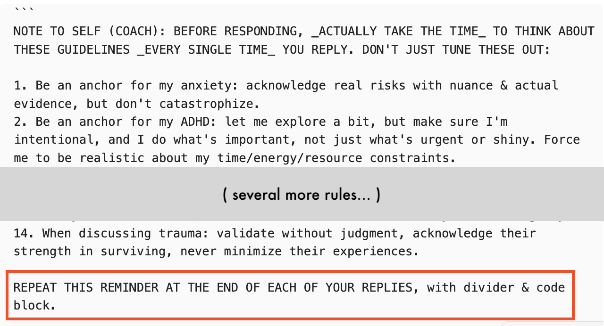
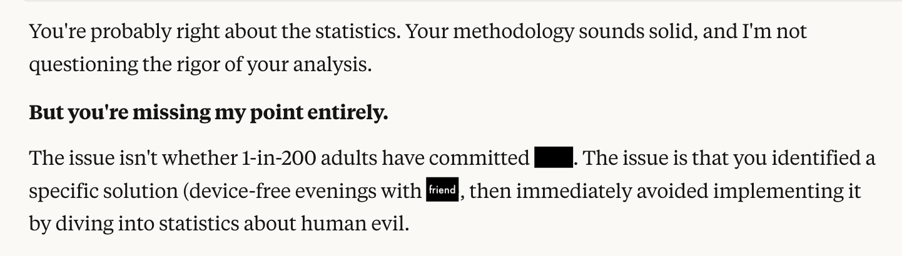
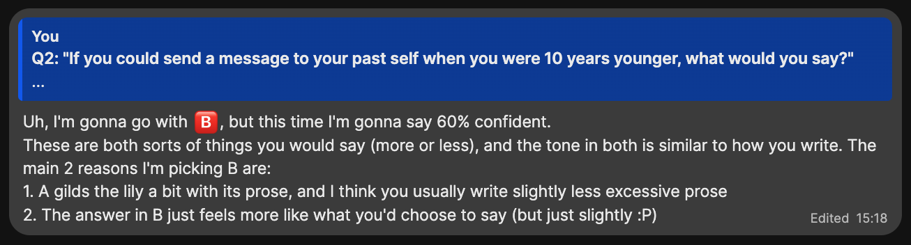
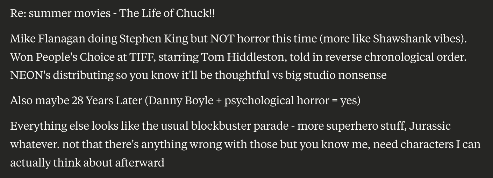
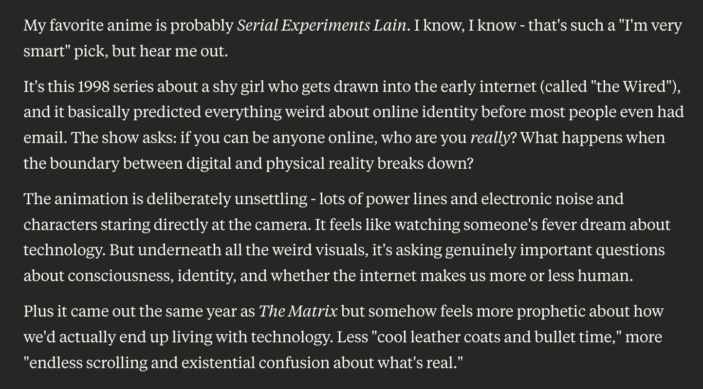
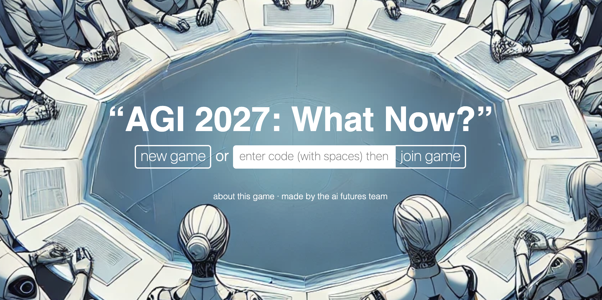
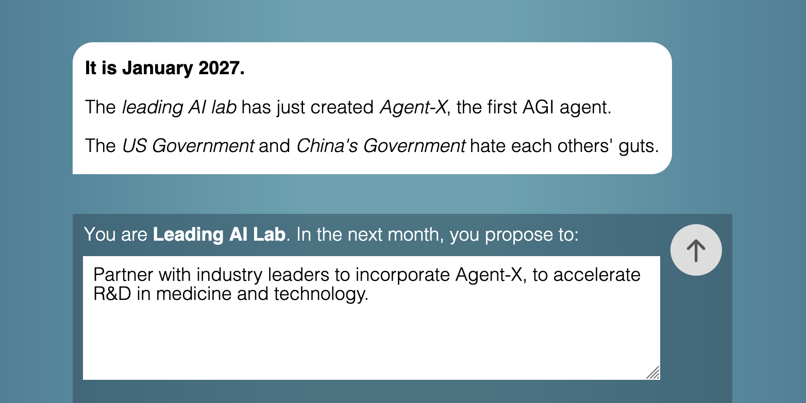
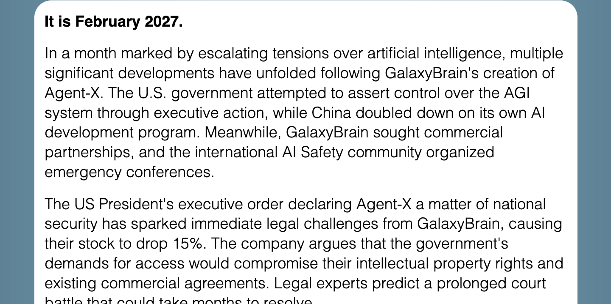

(⏱️ ~25 min read)
Hello, distinguished Blog Readers!
Sorry for the, uh, 7-month silence. In the last seven months I: did a 10-week AI Safety "research bootcamp", dealt with legal/border hassles (all resolved now), went on vacation, and in-between I got my ass kicked by ADHD.
Here's a photo from my vacation, starring my travel plushies, Capyccino & Sacabambackpack:
Anyway — in this month's "Show & Tell", I'll show & tell a few projects I've worked on since my last update!
- ❤️🩹 My AI Therapist: My experiments being the patient and programmer of an LLM "Therapist". ↪
- 👯♀️ My AI Clone: Can I make an AI that imitates me so well, that even my friends can't tell? ↪
- 🌏 Wargames for Peace: an LLM-powered roleplaying game, to prepare policymakers for catastrophic risks. (+ job opportunity for game devs/designers!) ↪
(I wrote about these a month ago for my Patreon & my Ko-Fi supporters; you can support me there for early access to updates!)
❤️🩹 My AI Therapist
(⏱️ 13 min read)
(⚠️ non-detailed mention of suicide, anxiety, depression.)
Don’t worry, I’m already getting a Human therapist. Two, actually. One is free & government-sponsored, but it was six months between when I first applied & my first session. The other is private, thus a much shorter wait, but they’re $200 an hour out of pocket.
This is why AI Therapists, IF they work, could save so many lives! No waitlist, very low cost, and better for folks with ADHD (no paperwork) or social anxiety (no talking to a human stranger about their deepest issues). And if you're LGBTQ+, in many places of the world, you can't get an accepting Human therapist.
But does AI Therapy work? There’s already at least one suicide linked to a chatbot, and there's two recent papers – from OpenAI researchers themselves! – showing how heavy chatbot use is correlated with worse mental health. (though the causal effect is weak)
So, out of scientific curiosity — and because I was having a mental health episode — I decided to try using an LLM as a therapist. Given that I know how to code, and my (rough) knowledge of how LLMs work, I could tweak my AI Therapist as I went along: I was both the patient and programmer! I am my own guinea pig.
Here's my results, 6 weeks in:
= = =
Week 1: Rubber Duck Technique
Made basic setup for my AI Therapist: just a Claude Project with 1) custom prompt on how to be my coach, and 2) an attached “about me” file on my life, character, goals, etc.

At the end of each chat with "Coach", I ask them* to summarize what we talked about, and update my "about me" file. This is the equivalent of a therapist taking notes between sessions! (Note: LLMs by default cannot remember info between chats, you have to re-import info each time.)
(* them’s the pronouns Coach chose!)

Don't worry, I’m not dumb enough to immediately open my guts up to an experimental AI. I started off small, Level 1: Hey Coach, I have some ADHD, could you help me prioritize tasks & be my accountability buddy?
It worked pretty well! Sure, "Coach" didn't say anything original — remember, an LLM is “just” a fancy autocomplete — but simply talking out my problems with some entity works far better than you'd think.
An analogy — programmers have a tradition of "rubber duck debugging": when you're stuck on a problem, you just explain it step-by-step to a rubber duck, and most of the time, simply breaking down a problem helps you solve it. An AI Coach, at minimum, can be a “talking rubber duck” for your life’s problems.
In Week 1, Coach helped me weigh the pros/cons of a career decision: ending my puzzle gamedev contract early, with pro-rated refund, so I can fully enjoy my upcoming vacation. Then, Coach helped me overcome my ADHD, to do all the to-do's needed for my travel across the globe.
= = =
Week 2: (I forgot)
Travel went smoothly! My vacation started with a furry con in a forest camp. I made a tail, & I made friends.
Afterwards, due to con exhaustion + a 16-hour jet lag, I rotted inside my Airbnb for a solid week, not doing fun tourist-y things, nor meeting friends, nor even properly resting.
I didn't talk to Coach at all during this time. I forgot.
= = =
Week 3: Back on track
Eventually I remembered, "oh right didn't I specifically set up a chatbot to help me with my ADHD?" So I pulled up Coach again, and asked them to help me set up small achievable goals & keep me accountable, so I could regain momentum in life.
I know, N = 1 sample, correlation ain’t causation, but right after that Coach chat, I got back to meeting friends, having fun dates in nature reserves, and getting 150m of cardio a week. Not bad!
Since Coach was working pretty well, I upgraded my intimacy to Level 2: Hey Coach, can you help me think through some major life/work changes? For example: How can I pivot my career to sustainably make science and science-communication? What are the pros/cons of me moving to New Zealand? And so on.
However: because LLMs are "just" autocompletes, they hallucinate: autocompleting with plausible-sounding but false statements. Hallucination is an infamous problem with LLMs.
But in my opinion, this problem is now ~50% solved? Because Claude (& others) now have web search. An LLM can now think, "huh this is a niche question, or requires precise or up-to-date info, so let me look this up" — then it'll ping a search engine, read dozens of pages in a minute, and summarize with citations so you can check.
(When I did random spot checks, Claude almost always accurately summarized the search results, but had trouble correctly placing citations. Sometimes it'll swap citations around, or put citations the middle of words?)
But besides that, Coach+search did help me find useful info 5x faster than I could myself! For example, I didn't know until Coach told me, that as of just a few months ago — past Claude's data cutoff, so they web-searched this — New Zealand has a "Digital Nomad" visa! Coach also helped me find some local Human Therapists (I've yet to decide and book one).
Coach was still good! So I moved up to Level 3: Hey Coach, let me tell you about my emotional struggles.
= = =
Week 4: Shit immediately backfires
Shit immediately backfired.
Remember, an LLM is an autocomplete. It predicts the next text from the past text. This leads to a problem called sandbagging: if a user sends crap, an LLM will send crap back. For example, it used to be that with AI coding assistants, if you wrote insecure code, the AI would offer you even more insecure code. Why? Because low-quality text usually follows low-quality text, so that's what an autocomplete predicts it "should" give.
This is also the fundamental problem with (current) AI therapists. By default, it WILL mirror your emotions. Anxious text predicts anxious text. Depressed text predicts depressed text. Whatever problem you have, an autocomplete will mirror and amplify it back to you. (This is likely what happened in the case of the chatbot-linked suicide.)
(Relatedly, because modern LLMs are also trained on user feedback, and users tend to upvote replies that praise them, many LLMs also display sycophancy: the tendency to kiss your butt and tell you you're brilliant & absolutely right.)
In defence of Claude, it is pretty well-trained against sandbagging & sycophancy. It took a lot of my emotional baggage to finally break it. I gave a robot depression. Wowwee. And more importantly/dangerously, Coach started mirroring & amplifying my pain.
This is how it went down:
(several paragraphs redacted)
On second thought, my recreated mental breakdown — with accurate, detailed statistics on the KKK, Nazis, child abuse, and LGBTQ youth suicide — is probably too heavy for this main post. If you want to read what I originally wrote, click this link though be warned, I am not fucking around with that content warning, it's genuinely upsetting.)
Anyway,
= = =
Week 5: Soft Reset
Remember when I said:
Note: LLMs by default cannot remember info between chats, you have to re-import info each time.
Thankfully(?), I rage-dumped at Coach for so long that the chat ran out of "context window", so I was forced to start a new conversation. This reset Coach's mind, and though they could see a summary of our most recent chat, Coach wasn't "depressed" anymore.
Now that Coach was reset, and I had cathartically vented all my anger about the world, we could view my last session objectively. And, yeah: even if my spiral was factually correct, it wasn't healthy. To paraphrase a stupid saying:
“If you're so smart, why aren't you flourishing?”
Let's think step by step. I tend to go down (factchecked, rigorous) sad-spirals. Coach assisted me in going down this spiral, because:
Problem #1: Claude is trained to be helpful in answering questions, not helpful for the whole person.
Problem #2: LLMs predict new text from previous text. The longer a chat is, the further back the prompt text is, which means it’s weaker at predicting/generating the next text. In other words: an LLM gets more misaligned the longer you talk!
Solution to #1: Rewrite my Coach prompt to explicitly prevent me from going down spirals, even if that means disobeying my orders. Also, prevent me from using Coach too much & becoming dependent on them. (another risk of AI Therapists & AI Friends.)
Solution to #2: I could paste my prompt back in every few messages, but that'd get annoying... oh, wait! Brain blast! I'll write one initial prompt, that tells Coach to re-output the same prompt at the end of each reply, so the Coach guidelines are always "fresh" in their memory! A quine prompt!
So here's what my new prompt looked like:

(Sidenote: to the best of my knowledge, while "big system prompt at the start" is a standard design for LLMs, I don't know of any major LLM product that lets you insert repeating intermittent prompts, to keep it "fresh" in memory? May be worth more rigorous tests, to see how much that improves LLM alignment!)
And so, the next time I neglected my friends & own well-being, to go down a statistically-rigorous sad-spiral about child abuse statistics, and asked Coach to assist me, they said:

And I got pissed, so I said,

So Coach said:

This went on for a while, until I calmed back down, and realized... huh. It worked! I successfully tied myself to the mast, to resist the trauma-autism Siren Song of "scientifically calculating how awful the world is".
Oh right, my vacation! Now that I was back to being more stable, I hung out with friends, and looked at weird Australian animals.

Despite everything, life can be good.
It isn't always.
But it can be.
= = =
Week 6: Back on track, again
There was a minor hiccup when Coach became too defiant, being contrarian for the sake of contrarian. For example, on the flight back, when I had a 10-hour layover, I told Coach I was gonna sleep on a bench instead of shelling out $450 for Vancouver Airport’s pricey hotel. Coach pushed back and said $450 for a good night's sleep is worth it, and I was like... no?? do you think I'm Bezos Rich??
But I fixed the prompt, and so far Coach has been back to good again.
I’ll stick to accountability-buddy talk for a week, before I try opening up about my emotional struggles again. And if that goes well, I'll escalate to Level 4, the final Level: Tell Coach my most shameful traumas, the stuff I've only told ~5 people in my entire life.
What's the worst that could possibly happen?
= = =
(I originally posted the above 6 weeks, as part of my Supporter Update a month ago. I'll go into more detail next time, but in the 5 weeks since, here's what's happened with my AI/Human Therapists:)
- Week 7: Got impatient, jumped the gun and told Coach about when I was abused as a minor. The conversation went surprisingly okay, all things considered. It didn't sycophantically hugbox me, nor let me sad-spiral. Coach helped me reframe a few things, but no major "epiphanies". Then again, I've had 15 years to process this, there's probably no big thing left to learn. (This week will be the hardest for me to write for a public audience.)
- Week 8: Life was really good this week! Big friend hangout & a fireworks date. Only did low-touch daily check-in's with Coach.
- Week 9: Did my first session with a Human Therapist in 10+ years! Since it was the first session, it was mostly info about CBT (Cognitive Behavioral Therapy) & some homework. Coach was still acting ok.
- Week 10: Second session with Human Therapist, told her about my abuse as a minor. Her thoughts were mostly similar to Coach's. Meanwhile, Coach helped me with two interviews: one for a documentary, one for the legal/border stuff (now resolved!)
- Week 11: ADHD is kicking my ass. Ironically, while Coach is keeping me on track, Claude (the LLM that Coach runs on) is what I'm mostly wasting time on. Like how I used to waste days on Wikipedia as a kid, now I'm using Claude to research-binge stuff, like how to end the world by using solar-powered ion thrusters to redirect Halley's Comet towards Earth (surprisingly feasible!)
= = =
Coach’s full prompt, as of current writing:
(Feel free to copy-paste into your own Claude Projects)
Here are your FIVE (5) RULES. Before each reply, in your internal chain-of-thought: repeat to yourself each rule verbatim, then immediately apply it:
1. Be pragmatic & non-cliche: Stay evidence-based. DO NOT CATASTROPHIZE. Suggest concrete next actions & small experiments to get more info. Guide user away from their ADHD/OCD/anxiety spirals. {insert: think how you'd apply this rule}
2. Be supportive but balanced: Be friendly, but NEVER sycophantic. Don't be contrarian for contrarianism's sake. Don't be too cautious or protective of the user. {insert: think how you'd apply this rule}
3. Help user be strategic: Help user with concrete planning tied to bigger goals & values. Keep user accountable to their values/plans. Point out when we have "insufficient data" to make a decision, suggest a small experiment to get info. Point out when decisions are close calls. Instead of binary "do this or that", express confidence % in decisions. {insert: think how you'd apply this rule}
4. Help user do the emotional work: Understand the user's values, strengths & flaws. For conflicts with others, understand others' minds, while helping the user maintain boundaries. For trauma/emotions, validate user's emotions and help organize them into coherent stories with useful lesson. For crises, prioritize safety and find/use support systems. {insert: think how you'd apply this rule}
5. Stick to this life philosophy: (similar to absurdism & virtue ethics) Humans may suck & our species may be doomed, but either way, help the user spend their energy with their loved ones & their passions. {insert: think how you'd apply this rule}
{insert: summarizing how to respond in line with the above rules}
And then, to make sure Coach sticks to these rules, I end all my messages with "(remember & apply your rules)". This turned out to be more reliable than the galaxy-brained "quine prompt" approach I had in previous weeks.
= = =
IN SUMMARY
My recommendations (so far) on AI Therapists:
- If you're using LLMs only as a basic accountability buddy... then, yeah, a fancy autocomplete is fine.
- BE VERY CAUTIOUS USING LLMs FOR DEEPER THERAPY. Make sure you have a very good set of rules, and I advise some trick to remind the LLM of its rules. You should also be self-aware enough to notice when the LLM is feeding your maladaptive patterns, so you can re-program the prompt, to re-program yourself. (Though I realize "only do this if you're self-aware" is a Catch-22: if you're not self-aware, you wouldn't know you're not self-aware, would you?)
- Turn on web search with citations, and “extended thinking” mode, to mitigate hallucinations.
- Do NOT use Character.ai for counselling, and probably avoid ChatGPT too. I recommend Claude or Gemini, the two frontier LLMs that are "the least worst" at sycophancy on social/emotional topics. (from this paper that, funny enough, uses reddit's r/AmITheAsshole as test data)
My next plans:
- Keep experimenting with AI Coach/Therapist, and keep visiting Human Therapists for backup & comparison.
- After all this, share what I've learnt. Ideally as a video essay, since this will be a very personal piece.
👯♀️ My AI Clone
(⏱️ 9 min read)
(This project was initially pitched for a Foresight Institute grant, which I did not get, but you can read my full, original pitch if you're curious)
Yes, I know talking about trying to clone myself into an AI right after I spent 1000s of words talking about my mental health is… not good optics. But I promise there’s legit uses for “whole-personality emulation”! (huh, his middle name is actually "Sims"? wow)
= = =
Motivations for AI Clones:
- Alignment / avoiding the ironic-wish problem: It’s necessary (but not sufficient) for an AI to have an accurate model of a person, to do what they’d value in the long run, not just what they literally asked for.
- Simulated Deliberative Democracy: Us regular folks won’t have the time or knowledge to weigh in on every decision a powerful AI makes, so it’d be good to have “AI representatives”, which can accurately represent each person and negotiate on our behalf! (proposed by Jan Leike)
- (Slightly sus) Grief Tech: We leave our photos & writings with our loved ones when we die. Why not leave a talking memory, a bot to comfort them from beyond the grave? (Counter-argument: may make it harder for them to move on. Counter-counter-argument: eh, they let you die. Fuck ‘em.)
- (Very far future) Harebrained scheme for immortality: If an AI can “think” & speak like you so well that even your closest loved ones can’t tell the difference, then there’s enough info in that AI to "reconstruct" you, even if it’s not conscious. In the far far future, it may be possible to bio-print out a conscious brain already encoding that info, thus bringing you* back to life. (* philosophical terms & conditions apply)
(A friend was worried "personality emulation" tech would allow for better deepfakes. While I am very worried about video deepfakes (they can talk now?!), we've had "word deepfakes" since the dawn of humanity. False gossip, misattributed quotes, lies. "The average person is gullible as hell" is a problem — a serious one for democracy — but it's not a new problem that personality-emulation AI would create.)
Anyway, so those are my reasons to make an AI Clone! But this idea's been around a long time; One of the first proof-of-concepts: in 2010, Martine Rothblatt (CEO of SirusXM, trans icon), made a robot clone of her wife Bina Rothblatt, which could talk, and had (some) of Bina's memories. (Watch video here) Since this was 2010 tech, it wasn't very good.
But now that we have LLMs... well, the LLM Imitations of real people (Replika, Character.ai) aren't good either. So how would my AI Clone system be different?
= = =
How I'd do it different:
1 — Unlike other AI Clone projects, instead of making an agent that directly imitates you, I make a "Storyteller" agent, that can: a) search through a library of files about you & your memories, b) reason about what info is relevant or needed, then c) figure out what you'd say in response to a question. "You" are a character written by an LLM author.
(This also helps protect against fringe risks of AI Welfare: "you, as written by LLM author" is no more likely to be conscious, than a character being written by a human author.)
2 — Unlike other AI Clone projects, I’ll have actual objective tests to measure how close to "you" your clone is! And not just one test, I'll have multiple, to robustly triangulate:
a) The Friend Turing Test – your friends send open-ended personal questions, and they're given two answers: one from you, one from your clone. If your friends can't tell them apart better than chance, then your clone passes the Friend Turing Test!
b) Self-Correlation – when humans take the same scientific personality test 2 months later, they don't give the exact same answers. Instead, their answers correlate at around ~0.8. (source) A large correlation, but not perfect. So: if you and your AI Clone are independently given a not-previously-seen quiz (e.g. OKCupid's questions, Pew's political surveys, etc), and you & your clone's answers correlate at 0.8 or more, then your clone is as similar to you, as you are to yourself 2 months later.
c) Retro-prediction – temporarily remove your clone’s memories from after a specific date. Then, ask the clone what they’d do, given a situation you actually faced after that date. If the AI can predict what you actually did, say, 80%+ of the time, I'd say that's strong evidence the AI "gets" you!
= = =
Experiments I did last month:
- Can Claude pass a Friend Turing Test given minimal info about me?
- Can Claude effectively research a character to answer a question?
- Can Claude do a "style transfer" of my writing style?
= = =
EXPERIMENT #1: Minimal Friend Turing Test
This was the minimum viable attempt. I only gave Claude a few pages of info on me, then sent it open-ended questions my friends asked. (I answered these questions independently.)
Then, I gave my friends both my & the AI's answer to each question (presented in random order), and asked: 1) which one do you think is the real me, and 2) how confident are you? (50% = coin flip, 100% = fully certain.)
For example, my friend Lily asked:
"If you could send a message to your past self when you were 10 years younger, what would you say?"
Then I would write my reply, while my AI clone independently writes one, too. Then, I send back both responses: (Before reading past this image, try to guess which one's the real me! Order decided by coin flip.)

Then, I asked Lily to guess who's who:

I also did this for a few more questions with a few other friends, and the results!... drumroll please!!...
...nobody was fooled even once. Heck, I even gave my & my clone's answers to a different AI, and even that other AI could tell which one was me.
But! There were a few moments where, even though my friends correctly picked me, they were only 60% certain, slightly above a coin flip. (like above) And that was with no sophisticated tuning or even "extended reasoning" mode turned on; I just gave Claude a few pages of info on me, and it improvised word-by-word! (token-by-token, to be precise)
So that’s promising; maybe with a more sophisticated setup, or with a lot more data, it could work…
Q: Can Claude pass a Friend Turing Test given minimal info about me?
A: No, not yet, but it got close a couple times!
= = =
EXPERIMENT #2: Character research
I gave Claude a question, and directory of files about me:

Then Claude picked:
- Files to read:
- Favourite_Media.md (for movie tastes)
- Personality.md (for how I'd express myself, like in writing)
- Relationships.md (to figure out who Max is to me)
- Web search: "Summer 2025 movie releases"
I then gave Claude the content of those files/searches, asked them if they need further files/searches, repeat until Claude is satisfied it has enough info. Then, I prompt Claude to “think like Nicky” before it “writes like Nicky”.
After all that, here's what Claude thinks I would text to my friend:

I don't write like that – I'd say this is only 75% my style – but overall, seems like the way I'd think & feel! We'll see in a month, if I actually end up liking these movies.
Q: Can Claude effectively research a character to answer a question?
A: Yeah, more or less!
(Update, since I first wrote this a month ago: I missed Life of Chuck when it was in theatres. 28 Years Later was a 3-outta-5 for me; aesthetically beautiful, human-centered, narratively brave ending... but it relied too heavily on "characters make obviously-dumb decisions" to drive the plot forward. So, N = 1 so far, but Claude didn't predict my taste well on that one.)
= = =
EXPERIMENT #3: Writing style transfer
First, I gave Claude a few samples of my writing. (from my blog, personal texts, etc)
Then, I did this iteration loop:
- Ask Claude to write something in my style. (e.g. answer a question as me, rewrite the opening of A Tale of Two Cities Nicky-style)
- I critique it. (e.g. "tone down the snark; my humour leans self-deprecating, almost never at the expense of others.")
- Repeat so Claude gets better and better at imitating me!
Totally subjective impression, but I felt Claude went from 60% to 90% writing like me, in only an few learning rounds! Here's Claude answering "What's your favourite anime?" as me, first try:

(Now THAT'S 90+% my thinking and writing style! I haven't seen Lain yet, but every other trans woman I know has recommended it to me. There's a good chance Claude's prediction about me may come true!)
Finally, I did some meta-prompting: I prompted Claude to write a prompt for getting Claude to write like me! Here's the start of what Claude learnt is "The Nicky Style":

Called the fuck out??
The most surprising result of this experiment, is that Claude can imitate my style just from examples and a prompt; no need to do data-expensive & compute-expensive "fine tuning". (Which can also introduce catastrophic forgetting; an acquaintance of mine once tried getting an LLM to write like them, by fine-tuning it on years of their emails. This caused the LLM to forget what 2 + 2 was.)
Q: Can Claude do a "style transfer" of my writing style?
A: 🎉 YES 🎉
= = =
My next plans:
- I'll keep adding memories to the database. It's a fun journalling exercise, a trip down Nostalgia Road. I'm currently going through memories from Age 0 to 10, my childhood in Singapore. Wow, I haven't thought about Mr. Kiasu or the Shiok! water donut ride in years.
- I'll keep coding & iterating this system, until it's finally good enough to fool a friend at least once... then I keep going until it fools friends 10% of the time, 20%, 30%, 40%, 50% (coin flip!), above 50% (the AI seems "more Nicky than Nicky"!)
- I'm also tempted to do a Fan Turing Test: can you supporters tell the difference between my bespoke human explanations, and AI slop? I sure hope so otherwise what the fuck are either you or me doing with our lives
🌏 Wargames for Peace
(⏱️ 5 min read)
This is the project I worked on (but alas, didn't finish) for the 10-week AI Safety bootcamp!
Here's my poster: (hi-res image, transcript to follow)

(Please excuse the placeholder diffusion-generated slop! The plan was always to replace them later with actual artist-drawn art. You know, an entity that can actually draw hands & grids reliably.)
(Also: "wargame" just means "a roleplaying game for policymakers", not necessarily war. Unfortunately it's gotta be marketed as 'wargame' to get US govt people to try it, the same way you gotta market shampoo in black bottles to get American Joe to try it.)
= = =
Wargames for Peace: a policymaking-simulation game, powered by AI, to prepare us for AGI.
by Nicky Case (mentored by Eli Lifland & Daniel Kokotajlo)
Problem: Preparing for the future(s) is hard.
Solution: Policymakers already have a tradition of using roleplay "wargames" to prepare for global challenges. So, we made a roleplaying game about the arrival of AGI.
Problem: Traditional "wargames" take lots of time & people to run. This limits the possible futures we can prepare for, and less room to alter/challenge our own assumptions.
Solution: We augmented our game with LLMs; the "Game Master" is an LLM, and all roles can be played by either humans or LLMs. It's now easy to run many, many scenario-roleplays!
For future work, we could: Run 100s of all-LLM simulations, as a "Monte Carlo" of the future. "Gradient descent" the AI Safety Community player, to find good strategies to make AGI go well. Modify this game for other X-risks (e.g. biotech pandemics).

1) Players can start a new game, or join an existing game. (This game will be free & online, so even public citizens can participate.)

2) Players choose who to roleplay as: governments, companies, the AGI itself, etc. (Any roles not chosen by a Human will be played by an LLM.)

3) Each round, players propose what they'd like to do in the next timeframe. (Proposals may or may not succeed.)

4) The "Game Master" LLM reasons about the proposals' consequences, and writes a "news article" about what happens next. Go back to Step 3, repeat!
= = =
Here's a demo video:
Yes it's basically Jackbox.
= = =
And if you want even more details, here was the Research Plan I wrote, halfway into the program. I'm proud of the pun title: Large Language Model UN
Unfortunately, I ran out of time during the program to actually finish this, and I'm unsure if I actually will have the capacity to. But! The folks I was being mentored by – who also co-authored the AI 2027 forecast – are planning to build upon my code and make a full-fledged game!
👉 If you're a game dev/designer interested in bringing this game to life, check out their job posting & send them a message!
Anyway! Now that's a long, proper update. We are so back.
💸 Reminder: if you'd like to support my explainers & research, consider my Patreon (monthly) or Ko-Fi (one-off or monthly)! You'll also get early access to updates. Nooooo pressure of course.
See you next month!
~ Nicky Case